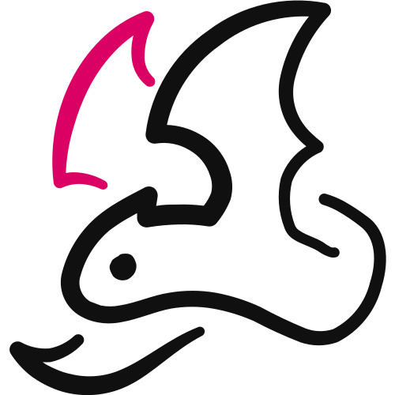

Client Flywheel™ · Step 9 · Dragon Fire Ads™
Dragon Fire Ads™
The paid ads that fill your virtual event. Three skills plan them, write them and build the images, all from the work you've already done.

You'll leave with your Ad System Map (19 ads, a 14-day calendar and budget, audiences and what to watch), a finished ad pack (brief, five angles, copy, video scripts and campaign setup), and 21 static images with an Ad Preview page that shows every ad as it looks in the feed.
- Your ads are already written, in pieces. The skills select and shape what your system holds. They don't invent from thin air. 01
- Three skills, in order. The Plan decides the ads, the Ad Pack writes them, the Statics build the images. 03
- 19 ads across four stages. Attract and Engage warm people up. Convert and Motivate fill the virtual event. 04
- Fourteen days, money weighted to the end. Convert never runs more than 14 days out. 05
- Install each skill once, then run it in Claude. Each one asks Guided or Fast first. 10
01
Ads Built From Your System
Dragon Fire Ads™ is the paid traffic that fills your virtual event.
By the time you reach Step 9, your system already holds everything an ad needs. Your promise, your avatar's own words, five acts of copy, hundreds of hooks, a tool that stops the scroll, and a funnel to send people to.
So the skills don't write ads from thin air. They select, assemble and shape what you've already built.
That's why the ads sound like you, not like ads.
The whole first pack. One small set of ads across four stages, built one stage at a time. More ads come from the winners, never from padding the first pack.
What it is not
It's not a pile of one-off ads written on a whim. Every ad has a slot, a source and a job.
It's not a set of forecasts. The skills name what to watch once your ads are live. They never predict what the numbers will be.
And it doesn't build your pages or launch anything in Ads Manager. You stay in control of what goes live.
Same message, different front doors. Your Goliath Content™ Map already wrote the front doors. The ads walk people through them.
02
Where It Fits
Dragon Fire Ads™ is Step 9, the last step of the Client Flywheel™, the third pillar of The $100K Day Engine™.
Its plan also covers the paid layers of Pixie Dust Social™, Step 8: the ads that warm people up before they're asked to join.
Figure 02 · The $100K Day Engine™. Three pillars, nine steps. Your ads are built in Step 9.
What it reads
Every ad pulls from work you've already saved. The skills check for it before they start.
| Asset | Status | What it gives your ads |
|---|---|---|
| Goliath Content™ Map | Required, the gate | Every ad's source row and every hook |
| Event Magnet™ Spec and Visual | Required | The tool on every image, and what people walk away with |
| SCORE™ Card | Required | Real proof and the body of each ad |
| Your virtual event details | Required, it asks | Format, free or paid, schedule, next date, start time, time zone, registration link |
| $Million Promise™ · The Golden Avatar™ · Brand Voice | Read for the copy | The promise in every ad, the callout, the words |
| Money Model · BRAND KIT block | Read for the setup and images | Free or paid entry and targets; your look |
No Goliath Content™ Map, or a map without Slingshot Hooks™, and the skills stop. The ads are built from it, so it comes first.
A thin map gives thin ads. If the map is light on an angle, the skill tells you and uses the nearest row instead of inventing one.
03
Three Skills, In Order
You run three skills, one after the other. Each one reads what the last one saved.
The PlanYour Ad System Map
It writes no ads. It decides which ads exist, where each one comes from, when it runs, who sees it, what it costs and what to watch.
Why it matters. Every later skill just fills a slot on this map, so nothing gets missed and nothing gets doubled up.
What you get
The Ad System MapYour ad roadmap: all 19 ads, the map rows behind each one, the 14-day calendar and budget, audiences, what to watch and your short to-do list., plus a CSV tracker. Each ad moves from planned to copy to creative to live.
Asking for 40 ads in the first round. A big pack never gets finished.
Keep the first pack at 19. Winners earn the next ads.
The trap: skipping the plan and going straight to copy. Without slots, you end up with ads nobody scheduled and a budget nobody split.
The Ad PackThe words, the scripts, the setup
It writes the ads: the campaign brief, five SCORE™-shaped angles, three hooks each, short and long primary text, headlines, buttons, three video scripts and the campaign setup.
Why it matters. Every hook comes from your map's Slingshot Hooks™The ready-made hooks in your Goliath Content™ Map, 15 per section. Each ad cites the row it came from, so a winner can be traced back., so every ad sounds like you.
What you get
One ad pack file. Each long ad is scored out of 25 on the five SCORE™ acts, and checked against Meta's ad rules for coaches.
"Get my free scorecard." It says what the tool is, not what it does for them.
Sell the result they want. The tool stops the scroll; the outcome is the message.
The trap: writing a hook the map doesn't hold. If an angle is missing, add it to your Goliath Content™ Map first, or use the nearest row.
The StaticsThe images and the Ad Preview page
It builds the static image ads on your own Dragon Fire Ads™ canvas, around your Event Magnet™ tool, in your Brand Kit.
Why it matters. Your tool is a real, visual thing. On the image it opens a curiosity loop that plain text can't.
What you get
A first set of 21 statics, ready-to-upload images for Ads Manager, and an Ad Preview page that shows every ad in run order, as it looks in the feed.
Small print, a logo in the corner, a sub-line nobody can read on a phone.
Big, readable words. If a line can't be read on a phone, it goes in the ad text instead.
The trap: building ads on your Event Magnet™ canvas. Your ads get their own canvas, so the tool pages stay clean.
04
The Four Stages
The 19 ads sit in four stages. The first two are the paid layers of Pixie Dust Social™. The last two are Dragon Fire Ads™.
| Stage | Ads | Its job | When it runs |
|---|---|---|---|
| Attract | 4 | Teach and tell stories to your avatar. Builds the warm audiences everything else retargets. | Always on, small budget |
| Engage | 7 | Retarget everyone who's seen you. One piece a day, refreshed every 7 days. | Always on |
| Convert | 5 | Fill the virtual event: registrations or ticket sales. | The last 14 days, stepped up in the last 7 |
| Motivate | 3 | Remind people who reached your registration page, and get them there live. | The last 7 days only |
Attract and Engage run as posts first. You publish the piece on your page, then put budget behind it, so the likes and comments build up as social proof.
Convert and Motivate are ads built for the job.
You build one stage at a time, in this order: Convert, then Motivate, then Attract, then Engage. Convert first because it fills the virtual event. Motivate next because it's the quickest lift in show-up.
Filming, once
The plan gives you one filming session: six scripts across Attract, Convert and Motivate. The Motivate takeaway video is recorded once without a date, and the date is added as on-screen text each cycle.
05
Fourteen Days, Weighted Late
Days count back from your virtual event: D-14 through to D0, the day itself. Convert never starts earlier than D-14.
Spending earlier wastes the first week and lowers show-up. Attract and Engage keep warming your audience in between.
These are the plan's starting defaults. You can change any of them.
| Stage | Share of the cycle budget | Floor |
|---|---|---|
| Attract | About 5%, flat across the 15 days | $5 a day |
| Engage | About 10%, flat | $5 a day |
| Convert | The rest, shared with Motivate: 30% in the first week, 70% in the last | $50 a day |
| Motivate | A quarter of the last week's share | $20 a day |
If your budget is too small to clear a stage's floor, the plan says so and shows the minimum. You choose: raise the budget, or trim Attract first. It never quietly shrinks a stage below its floor.
No budget yet? The calendar runs in percentages and flags the budget as missing.
Each new cycle, you re-run the plan with the new date. It rolls the calendar, the reminder date and the Engage content forward.
What to watch
The plan names the numbers to watch once your ads are live. It never predicts them. Your targets, like cost per registration, come from your Money Model.
06
Five Angles, Five Front Doors
The Ad Pack writes five Convert ads. Each one is led by a different SCORE™ act, so your test actually learns something.
Every ad still carries all five acts, one line each. The angle decides which act opens it.
| Angle | Opens with | The image it pairs with |
|---|---|---|
| Recognition | Serendipity: "this is about me" | Pain call-out |
| Seen | Connection: the struggle named, by a host who's been there | Host |
| The Tool | Opportunity: the difference | Tool hero |
| Proof / Two Futures | Reality: the cost of staying put, and the life after | Proof, or two roads with no real proof yet |
| The Door | Execution: the obvious next step | Two roads |
Each ad opens by calling out your avatar. The skill writes 3–5 calloutThe first words of the ad that name who it's for, built on your $Million Promise™'s Ideal Audience. As a statement, a question, a gate or a direct address. variants and spreads them across the ads, so the callout gets tested too.
It also asks where the ads send people. The default is your virtual event's registration page. You can also choose click-to-message, an Event Magnet™ opt-in, or retargeting.
07
How the Pieces Fit
One thread runs through everything: your $Million Promise™.
- The plan locks one promise for the cycle. Your $Million Promise™, word for word, plus the callout variants every ad opens with.
- The ads carry it. The full promise sits in the long text. The short text and headline carry its core.
- The images carry it. The promise is on every static, in its own band or as the headline.
- The page matches it. Your registration page headline makes the same promise, in the same words.
If the page doesn't match, it's fixed before Convert goes live. Either the page is updated in your Cash Flow Engine™ funnel, or you run a declared promise test: each promise gets its own page, and the winner is locked everywhere.
The 21 statics
The first build is seven image ideas, each in three looks, so you have real choice and Meta has real variety.
Your Kit's dark ground, white words, your accent on the key phrase.
A white ground, dark words, your brand colour on the key phrase.
A photo full bleed, with a dark fade top and bottom so the words read.
The seven ideas are pain, host, tool, proof, two roads, result-led and stats. Proof and stats are skipped until you have a real client result or track record to show.
Supporting AI images fill the scenes. A picture of you is made only from your real photo, and only with your OK.
The result drives the ad. Your tool and the result do the hooking. Your signature system is never named in an ad; you introduce it inside the virtual event.
08
Before and After
Here's the shape of one Convert ad's opening, before and after the skill shapes it.
"Want more clients? Join my free masterclass and get my audit!"
- Callout: [your Ideal Audience], named first
- Hook: [a Slingshot Hook™ from your map, cited by row]
- Online and live: said in the first two lines
- The outcome: [the result from your $Million Promise™]
- One action: one button, plus a link line in the text
"[Audience]: [the moment they're stuck in, from your map]. Join [host] live online and [the result they want]."
Figure 08 · Same ad, reshaped. An illustrative shape only. The brackets are filled from your own documents.
The first draft could be anyone's ad. It sells the tool and the masterclass, not the outcome. The second names the person, opens a loop in their own words, and sells the result.
09
The Hard Rules
These keep your ads converting and keep them approved. The skills hold you to every one.
- Every hook comes from your Goliath Content™ Map. Cited by section and row. One row feeds one ad.
- Sell the dream outcome. The tool stops the scroll. It's never the product.
- Your $Million Promise™ is in every ad and on every image. Word for word, never edited.
- Never name your signature system in an ad. It's introduced inside the virtual event.
- One ad, one big idea, one action. One button to one place. No "or book a call."
- Results are reported, never promised. "Our clients made…", never "you will make…" and never "guaranteed."
- Evergreen by default. Only Motivate ads carry a date: your virtual event's.
- Say "virtual event," never just "event." Cold audiences must know in the first line it's online and live.
- Free means free. On a free virtual event, no replay is offered and the tool is handed over live.
- No long ad ships with a weak act. Each is scored out of 25; any act at 2 or below goes back for a rewrite.
Anything your documents don't hold, like a real client result or the registration link, is flagged as [MISSING CONTENT] and listed for you. Nothing is invented to fill the gap.
10
Build Your Ads
Now you build them, in three chats, in this order. Each skill runs in Claude. You install each one once.
Dragon Fire Ads™ Plan
It reads your documents and builds your Ad System Map: the 19 ads, the map rows behind each one, the 14-day calendar and budget, audiences and what to watch. It goes one stage at a time when you choose Guided.
Upload the .zip as it is. Don't unzip it: the references inside are what the plan uses.
- Download the skill. Use the button above to save
cl-dragon-fire-ads-plan.zip. - Install it once. In Claude, open Settings › Capabilities › Skills, choose Upload skill and upload the .zip. Check: it shows as enabled.
- Open a new chat and ask for your plan. Start it inside your $100K Day AI Workspace and say "Plan my ads." Check: it asks Guided or Fast, who it's for, and new map or new cycle, in one message.
- Lock the facts and the promise. It shows what it found and asks only what your documents can't answer: your virtual event's next date, start time, time zone, registration link and budget. Then it checks your page headline against your promise.
- Approve each stage. The 19 slots, then the calendar and budget, then the stage settings, then your to-do list. Say "go" or make edits.
- Save it. In your AI Workspace it goes in Client Engine › Client Flywheel › dragon-fire-ads, as
ad-system-map.mdandad-system-map.csv.
Dragon Fire Ads™ Ad Pack
It writes the ads for one pack: the campaign brief, five angles with three hooks each, the copy, headlines and buttons, three video scripts and the campaign setup. It starts with Convert.
Upload the .zip as it is. It loads the SCORE™ Framework itself before it writes a word.
- Download and install it once. Save
cl-dragon-fire-ads.zipand upload it under Settings › Capabilities › Skills. Check: it shows as enabled. - Open a new chat and ask for your ads. Say "Build my Convert ads." Check: it asks Guided or Fast, who it's for, and where the ads send people, with your registration page picked by default.
- Read the brief. What it pulled, the campaign's big idea in one sentence, and every gap it will flag.
- Pick your hooks. The Angle Map shows five angles with three hooks each, cited by map row. It says which angle it would launch first and why.
- Approve the copy, then the video scripts and setup. Check: each long ad scores out of 25, with no act at 2 or below, and passes the compliance check.
- Save it. In Client Engine › Client Flywheel › dragon-fire-ads, as
ad-pack-[campaign].md. Then fill anything on the missing content list.
Dragon Fire Ads™ Statics
It builds the image ads on your own Dragon Fire Ads™ design canvas, around your Event Magnet™ tool, in your Brand Kit. Then it makes the images for Ads Manager and your Ad Preview page.
Have your exported Event Magnet™ tool image, your BRAND KIT block and real photos of you ready before you start.
- Download and install it once. Save
cl-dragon-fire-ads-statics.zipand upload it under Settings › Capabilities › Skills. Check: it shows as enabled. - Open a new chat and ask for your images. Say "Make the ad images." Check: it asks Guided or Fast, and which pack.
- Check the image list. One row per ad: the idea, the sizes and the headline on the image. On your first run it creates your Dragon Fire Ads™ canvas.
- Approve the AI images. It makes the supporting scenes and shows them to you. Check: any picture of you comes from your real photo, with your OK.
- Approve the boards. In Guided it shows one idea at a time, in its three looks. Edit on the canvas by hand if you like; your edits win.
- Open your Ad Preview page. Every ad in run order, as it shows in the feed, with a switch between the three looks.
- Save them. The images go in Client Engine › Client Flywheel › dragon-fire-ads › creatives, with the preview page beside your ad pack.
11
Check Your Work
Most weak ad packs fail in one of these six ways. Check yours against each one.
"Get my free scorecard." Nobody wants a scorecard.
Say what the tool gets them, in the words of your promise.
Cold audiences don't know it yet, so the name means nothing to them.
Let those hook. Reveal the system inside the virtual event.
Dated ads go stale and get switched off early.
Only the reminder ads carry your virtual event's date.
"You will make…" gets ads disapproved, and a disapproved ad converts no one.
"Our clients made…", told from I, we or a named client.
The ad promises one thing; the page headline says another.
Fix the page, or run a declared promise test.
Early spend wastes the first week and lowers show-up.
Attract and Engage keep warming people in between.
Is it ready?
- Your Ad System Map holds all 19 ads, each with a map row behind it.
- The calendar runs from D-14 to D0, and every stage clears its floor.
- Your registration page headline matches your $Million Promise™, or a promise test is declared.
- Every long ad scored out of 25 with no act at 2 or below, and passed the compliance check.
- Your $Million Promise™ is on every image, and every image reads on a phone.
- You've filled, or have a plan for, every item on the missing content list.
12
Your Action Items
Tick these off as you go. Your ticks stay in this browser, and when they're all done the contents marks this chapter complete.
Resources for this chapter
This is the last chapter. Every new cycle, re-run the Plan with your new date and the pack rolls forward.
Your ads don't need new ideas. They need the right pieces of the work you've already done, in front of the right people, at the right time.
Coach Launch
Apply For Partnership Opportunity
Last updated 2026-11-12